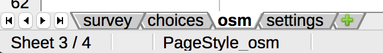
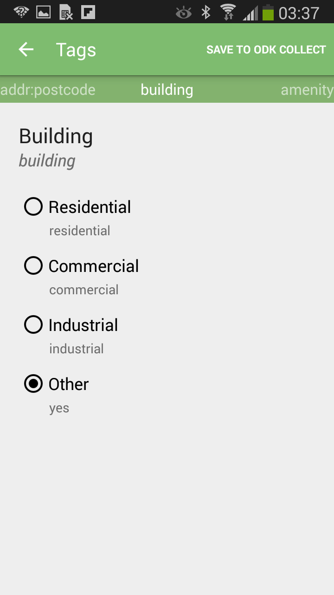
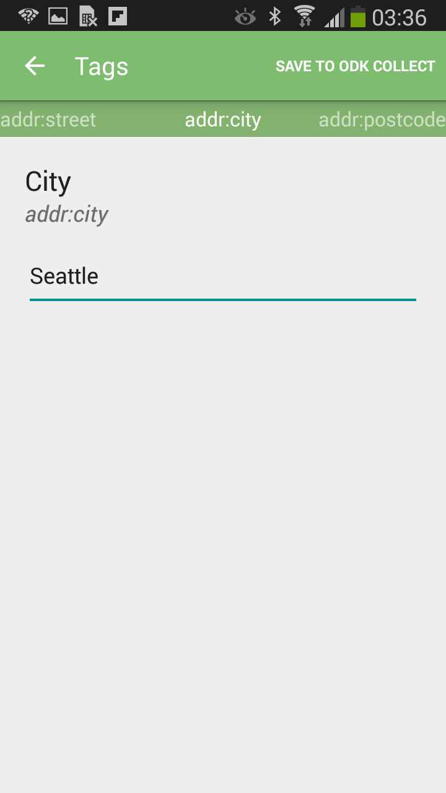
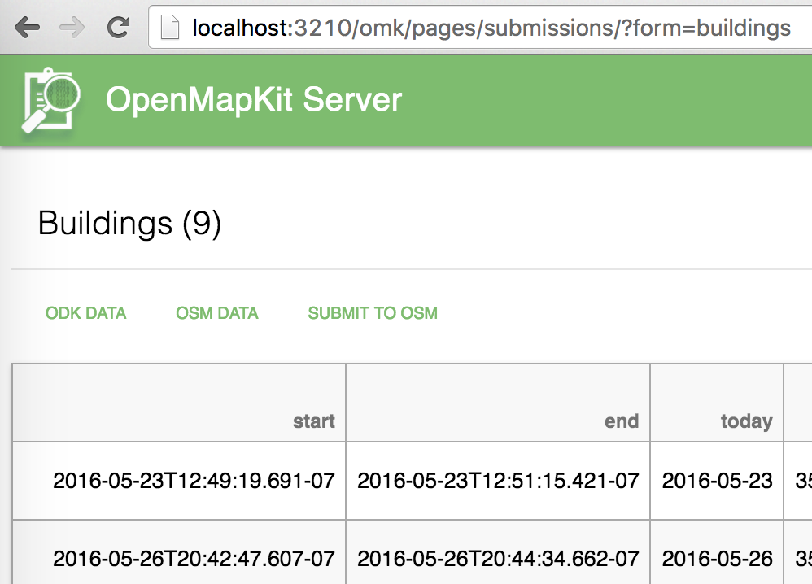
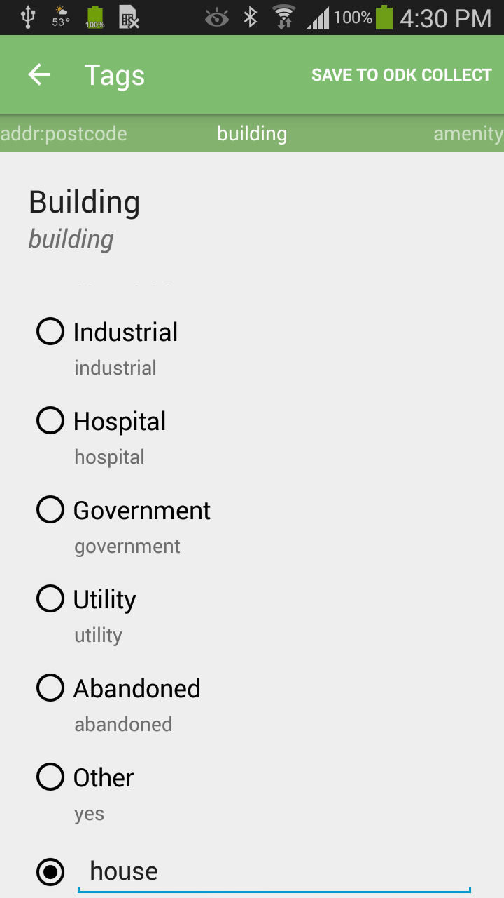
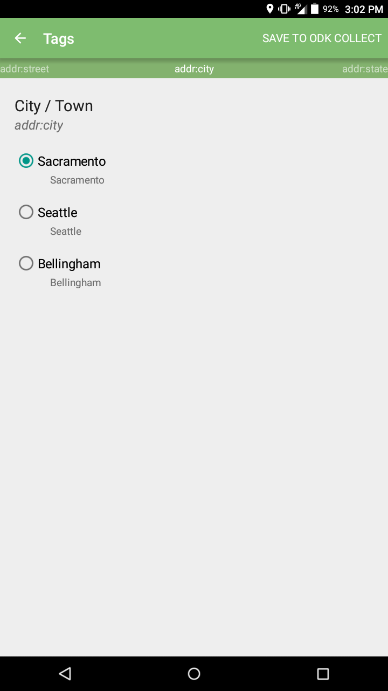

Creating a survey form¶
Todo
Need to revise and add more details to this section.
The primary change to the forms in OpenDataKit is that we’ve added an osm question type. Rather than including a geographic point or shape directly in the data of a form, we instead have an osm question that refers to an OSM file that gets created in OpenMapKit.
This is particularly important for two reasons:
- A survey about a specific, identifiable feature on a map is far more useful than a GPS point. There is no ambiguity about the place you are surveying.
- Surveys can directly enrich OpenStreetMap by adding tags to OSM features. You can create easily accessible public information for OpenStreetMap in addition to your private, domain specific ODK survey data.
An OSM question is a new “media type”, which means that it functions in the survey in the same manner as a photo or video. When an osm question is specified in a survey, ODK Collect opens OpenMapKit, providing parameters for the tags to be entered for an OSM feature that you will select.
Basic example form¶
If you download this Basic OpenMapKit Example form, you can see a simple OSM question. This question is named osm_building. In the type column, it is defined to be osm. It also has a parameter of building_tags.
This parameter is referenced in the osm sheet, between choices and settings.
OSM Sheet¶
The osm sheet has three columns: list name, name, and label. This sheet defines the tagging parameters that will be sent to OpenMapKit.
| A | B | C | |
| 1 | list name | name | label |
list name has two functions.
- It defines the set of tags that OpenMapKit will add to an OSM feature.
- It defines the set of tag values selectable for a given OSM tag. (optional)
In the survey sheet, our osm_building question had a type parameter of building_tags. In the osm sheet, we have several rows with the list name of _building_tags. This is the set of OSM tags the user will answer in OpenMapKit.
The set of OSM tags has a list name suffix of “_tags”. The values in the name column are the tag keys that are recognized in OSM. The values in the label column are the labels that will be presented to the user when entering values for the given OSM tag.
Often times we do not want the user directly typing in values for an OSM tag. Typing in a specific string value is error prone, and if there is a set of possible values that we want for a given tag, we want to present these values as a multiple choice question to the user.
Notice that one of the building_tags has the name building.
| 8 | building_tags | building | Building |
We want to give the user multiple choices of values for a building tag. These are the corresponding tag value choices that will be presented to the user in OpenMapKit:
| 11 | building | residential | Residential |
| 12 | building | commercial | Commercial |
| 13 | building | industrial | Industrial |
| 14 | building | yes | Other |
This step is optional, and if you do not provide a set of tag values, the user will manually type in a value for a given question.
| Multiple choice OMK tag question | Manual string Value OMK tag question |
|  |  |
Constraints¶
As of the OpenMapKit Android 1.1 release, we have added the functionality known as constraints. In effect, you can configure, both globally and on a form-by-form basis the behavior of the tagging user experience.
Configuration files¶
OpenMapKit Android comes with a default.json configuration file as well as an example form-specifc JSON file called Buildings.json. These files come with the application, and they are automatically copied from the app’s assets into the OpenMapKit constraints directory in your external storage. You can later edit these files and update the constraints for your custom purposes.
/sdcard/openmapkit/constraints/
The default.json file defines constraints that are to be applied to all surveys, and the Buildings.json is an example of a form-specific configuration that applies only to the Buildings form.
The form-specific configurations are named after the form title of your XLSX form.
{kind=link}
You can also see this title in OpenMapKit Server.
{kind=link}
JSON Schema¶
default.json is a good file for you to look at to see how to build your own constraint configuration.
{
"addr:city": {
"default": "Sacramento"
},
"addr:housenumber": {
"numeric": true
},
"addr:state": {
"default": "CA"
},
"addr:postcode": {
"numeric": true
},
"amenity": {
"hide_if": {
"building": "residential",
"shop": true,
"office": true
},
"custom_value": true
},
"building": {
"default": "yes"
},
"building:levels": {
"numeric": true,
"custom_value": true
},
"cuisine": {
"show_if": {
"amenity": true
}
},
"network": {
"select_multiple": true
},
"office": {
"hide_if": {
"amenity": true,
"shop": true
}
},
"opening_hours": {
"select_multiple": true
},
"operator": {
"select_multiple": true,
"custom_value": true
},
"religion": {
"show_if": {
"amenity": "place_of_worship"
}
},
"shop": {
"custom_value": true,
"hide_if": {
"building": "residential",
"amenity": true,
"office": true
}
},
"source": {
"implicit": "survey"
}
}
It is a simple JSON object where the keys are the names of the OSM tag keys that have constraints applied. The values are the name of the constraint, with the condition of the constraint.
For example, the religion OSM tag is only shown in OpenMapKit Android if you have selected place_of_worship for your amenity tag.
"religion": {
"show_if": {
"amenity": "place_of_worship"
}
}
Your form-specific JSON files are structured exactly the same, and they take a cascading effect, over-riding constraints for the same tags in default.json.
Constraint types¶
The following are all of the types of constraints you can apply on an OSM tag key.
custom_value¶
For tags that have a select one or a select many interface, if you enable the custom_value constraint to true, the user can input a custom tag value in addition to the pre-defined choices.
{kind=link}
This is a boolean type constraint. You simply have a “custom_value”: true for our given OSM tag.
"building": {
"custom_value": true
}
default¶
A default constraint for a tag applies a default value for a given OSM tag. The user can change that value if she chooses.
{kind=link}
This is a string type constraint.
"addr:city": {
"default": "Sacramento"
}
hide_if¶
A hide_if constraint for a tag hides the given tag from the user interface if the containing tag exists or has a certain value.
This can be a boolean or a string type constraint. A hide_if constraint can have both. If the constraint condition is true, the constraint applies regardless of what the conditional tag value is. Or, if the constraint condition has a string value, it applies only if the dependent tag key and value is true.
"shop": {
"hide_if": {
"building": "residential",
"amenity": true,
"office": true
}
}
This constraint applies for a shop. A shop is hidden if building is residential or if a value is given for amenity or office.
implicit¶
An implicit constraint gives a tag a specified value and does not show the tag in the user interface to the user. The OSM Element is tagged with an implicit key / value with no user intervention.
This is a boolean type constraint.
"source": {
"implicit": "survey"
}
numeric¶
A numeric constraint makes the numeric keyboard pop up by default for a question. The user still can toggle back to an alpha keyboard.
{kind=link}
This is a boolean type constraint.
"addr:housenumber": {
"numeric": true
}
required¶
A required constraint forces the user to answer a given question. You will know it is a required question when you see Required in the top right corner or the screen.
{kind=link}
If the user does not answer the tag question, the following Snackbar will divert the user from bouncing back into ODK Collect.

Clicking on OK will scroll you to the first missing required tag.
This is a boolean type constraint.
"addr:street": {
"required": true
}
select_multiple¶
A select_multiple constraint allows the user to select multiple values for a given tag. These tag values are ; delimited, and this is the standard OpenStreetMap convention for having multiple values for a tag.

This is a boolean type constraint.
"network": {
"select_multiple": true
}
show_if¶
show_if is the opposite of hide_if. A tag is hidden unless the constraint condition is met.
"religion": {
"show_if": {
"amenity": "place_of_worship"
}
}
In this example, the religion tag is only shown if the amenity is a place_of_worship.
This is a boolean or string type constraint.